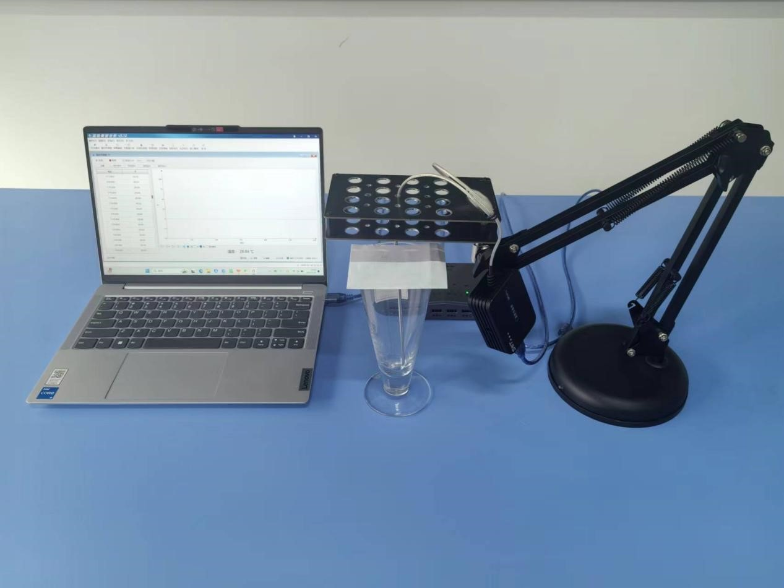
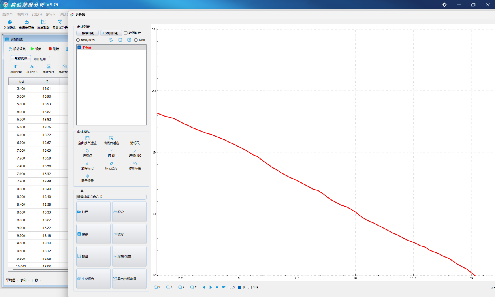
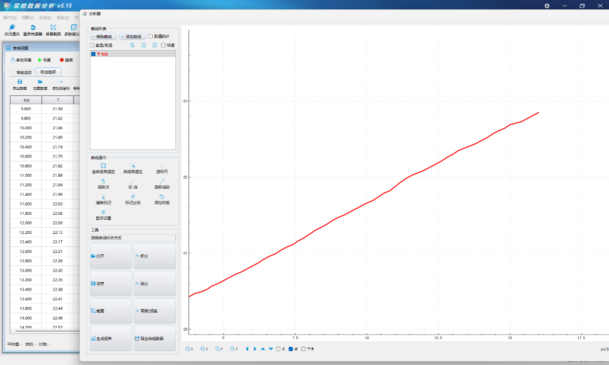

实验五十五 探究碳酸钠和碳酸氢钠的溶解
【实验目的】
探究碳酸钠和碳酸氢钠溶解过程中温度变化。
【实验原理】
探究碳酸钠（Na2CO3）和碳酸氢钠（NaHCO3，俗称小苏打）在溶解过程中温度变化的实验，可以帮助我们了解溶解过程中的能量变化。物质溶解在水中时，会伴随着能量的吸收或释放。这个过程称为溶解热。溶解热可以是放热的（exothermic，释放热量）或吸热的（endothermic，吸收热量）。碳酸钠和碳酸氢钠在水中溶解，会与水分子发生相互作用，破坏原有的离子晶体结构和水分子间的氢键，同时形成新的离子－水分子复合物。碳酸钠溶解是一个放热过程，碳酸氢钠溶解是一个吸热过程。
【实验器材】
碳酸钠固体、碳酸氢钠固体、稀释池、温度传感器、硬卡片、数据采集器、数据线、计算机、多功能支架等。
【实验装置图】

【实验操作步骤】
按实验装置图搭建好实验器材。打开实验数据分析软件，软件将会自动连接传感器。
拿开稀释池上的硬卡片并向稀释池中放入适当的碳酸钠固体，再向稀释池中加入适当的蒸馏水。然后将硬卡片盖在稀释池瓶口上，防止实验热量消散，影响实验数据。
经过一段时间实验，得到碳酸钠的实验数据。
我们发现碳酸钠溶解时的温度一开始最小，但随着溶解的进行，温度逐渐增大。由此我们可以得出结论：碳酸钠溶解过程是一个放热过程。
同理，我们做碳酸氢钠溶解实验，得到碳酸氢钠的实验数据。
我们发现碳酸氢钠溶解时的温度一开始最大，但随着溶解的进行，温度逐渐变小。由此我们可以得出结论：碳酸钠溶解过程是一个吸热过程。

碳酸氢钠吸热反应
碳酸钠放热反应
